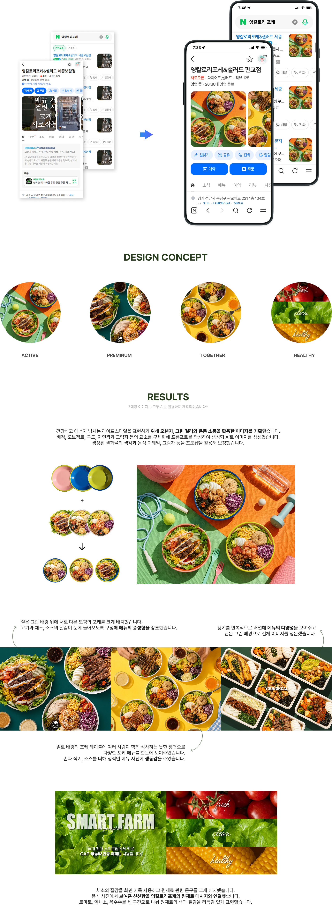

키 비주얼 이미지 제작
브랜드 메뉴를 다양한 플랫폼에서 효과적으로 보여주기 위해 AI를 활용한 푸드 키 비주얼을 제작했습니다.
기존 대문 이미지는 어두운 매장 사진 위에 문구가 겹쳐 있어,
작은 화면에서 메시지를 알아보기 어려웠습니다.
검색 결과에 표시되는 이미지도
매장 분위기 위주라 영칼로리포케가
어떤 메뉴를 판매하는지 바로 전달하기 어려웠습니다.
메뉴를 먼저 보여주는 이미지와 원재료의 강점을 전하는 이미지로
비주얼 구성을 새롭게 제작했습니다.
실제 메뉴 이미지를 기반으로 배경과 소품, 구도, 조명 등을 설계하여
이미지를 Ai를 활용하여 생성한 후, 리터칭을 거쳐
광고 및 플랫폼의 대문 이미지를 제작했습니다.
여러 메뉴를 함께 보여주되 각 이미지의 역할을 달리해, 고객이
브랜드를 처음 접하는 순간부터 메뉴 선택과 원재료에 대한 이해로
이어지도록 구성했습니다.
